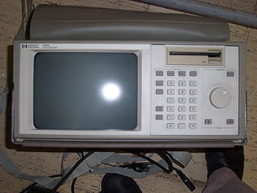

2.16.1. Разработка логического анализатора
Логический анализатор — это контрольно-измерительный прибор, предназначенный для запоминания (фиксации) и последующего анализа (например, просмотра на экране) временн'ых диаграмм большого количества цифровых сигналов. Логические анализаторы используются при динамической отладке различных цифровых устройств и систем, а также при контроле их работы. Совершенно незаменимы они при разработке и отладке различных микропроцессорных систем, контроллеров, компьютеров, где используется большое количество многоразрядных шин цифровых сигналов. Именно логические анализаторы позволяют разработчику увидеть те временные диаграммы, которые он рисует на бумаге при проектировании своего устройства, причем увидеть их в реальном масштабе времени, посмотреть, как работает устройство на своей нормальной рабочей скорости.
Логический анализатор по своему назначению близок к осциллографу, так как он также позволяет наблюдать на экране временные диаграммы сигналов. Но существуют и существенные отличия логического анализатора от обычного (не цифрового) осциллографа:
- Логический анализатор работает только с цифровыми, то есть двухуровневыми (реже трехуровневыми) сигналами, а осциллограф — с аналоговыми сигналами, имеющими бесконечно большое число разрешенных уровней.
- Логический анализатор имеет большое количество входных линий (обычно от 16 до 64), то есть позволяет одновременно фиксировать множество входных сигналов, а осциллографы обычно позволяют одновременно увидеть не более четырех входных сигналов.
- Логический анализатор работает в режиме однократного запоминания временных диаграмм (как запоминающий осциллограф). То есть анализатор запоминает состояния входных сигналов в течение заданного времени (называемого окном регистрации), а затем дает возможность анализировать зафиксированные последовательности. Осциллограф же работает обычно в режиме непрерывной развертки, то есть он не запоминает формы входного сигнала и позволяет наблюдать только повторяющиеся, периодические сигналы.
- Логический анализатор предусматривает возможность так называемой предпусковой регистрации. Эта возможность предусматривается и в цифровых осциллографах, но ее нет в аналоговых осциллографах.
Рассмотрим подробнее, что такое предпусковая регистрация.
Процесс регистрации входных сигналов (или отображения их на экране в обычном осциллографе) всегда должен быть привязан к какому-то моменту времени, к какому-то внешнему событию, называемому запуском. Иначе разобраться в отображаемых сигналах будет совершенно невозможно. Например, в осциллографах моментом запуска обычно является момент превышения входным исследуемым сигналом установленного порога. Сигналом запуска может служить и специальный внешний синхронизирующий сигнал. В логических анализаторах в качестве запуска обычно используется момент появления на входах заданного уровня или заданной последовательности одного или нескольких входных сигналов. В обычных осциллографах отображение формы входного сигнала (или входных сигналов) начинается в момент запуска, то есть на экране видно только то, что происходило со входными сигналами после момента запуска. Такая регистрация может быть названа послепусковой. Можно также сказать, что точка запуска всегда находится в начале окна регистрации (рис. 40.1).
Рис. 40.1. Послепусковая регистрация в аналоговых осциллографах.
В логических анализаторах (и в цифровых осциллографах) существует возможность увидеть и зафиксировать не только то, что было после запуска, но еще и то, что происходило в течение определенного времени до момента запуска. Именно эта регистрация до момента запуска и называется предпусковой регистрацией. В этом случае точка запуска может находиться и в начале, и в середине, и в конце окна регистрации (рис. 15.2). Понятно, что такая возможность очень удобна, так как, выбирая величину длительности предпусковой регистрации, можно увидеть те события, временная привязка к началу которых затруднена или попросту невозможна. Длительность (глубина) предпусковой регистрации может быть постоянной (например, равной половине длительности окна регистрации) или переменной (то есть задаваться пользователем в пределах от нуля до полной длительности окна регистрации). При переменной глубине предпусковой регистрации точка запуска может располагаться в любой точке окна регистрации — от его начала до конца.
С точки зрения схемотехники, логический анализатор представляет собой быстродействующую буферную оперативную память, работающую в периодическом режиме. Буфер этот однонаправленный: сначала в буферную память с большой тактовой частотой последовательно записываются состояния нескольких входных сигналов, а затем эта информация последовательно читается из буфера. Таким образом, адреса буферной памяти могут перебираться одним и тем же счетчиком как в режиме записи, так и в режиме чтения. Структура таких буферов уже рассматривалась.
Рис. 40.2. Предпусковая регистрация в логических анализаторах и цифровых осциллографах.